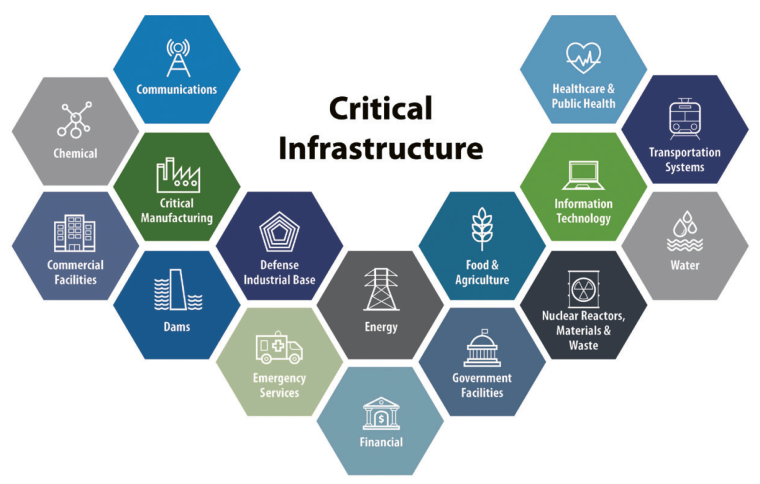

Critical Infrastructure

Critical Infrastructure (SECTORS)
Critical infrastructure security (Critical Infrastructure security
(CIP)) é um conceito para a preparação e resposta a acidentes graves que
envolvam uma região ou nação. As infraestruturas críticas estão relacionadas com a rede elétrica, a rede de transportes e os sistemas de informação
e comunicação. Qualquer dano/destruição a estas infraestruturas, trará consequências negativas para a segurança e bem-estar da população de uma determinada nação/região. Para evitar tais consequências, os Estados Unidos da
América (EUA), para garantir a segurança das suas infraestruturas críticas, em
maio de 1998, o presidente Bill Clinton criou uma diretiva, que foi atualizada
mais tarde pelo presidente Bush, para não só a segurança, mas também para a
identificação e priorização das infraestruturas críticas. Além dos EUA, o Conselho Europeu, em 2004, criou o European Programme for Critical Infrastructure
Protection (EPCIP), um programa para identificar e proteger infraestruturas
críticas, caso aconteça alguma falha pode afetar um país onde está hospedado
como também um estado-membro europeu. Todos os estados-membros foram
obrigados a adotar a EPCIP
A infraestrutura envolve vários setores, relativamente a banca de finanças,
transporte, energia, informação e comunicações, agências de aplicação da lei,
obras públicas, serviços federais e municipais, serviços de emergência, corpo de
bombeiros, sendo incluído ainda mais setores em 2003 nomeadamente a agricultura e alimentos e, por fim, monumentos e ícones nacionais. Cada um destes
setores, nos EUA, têm um departamento específico para coordenar a sua proteção.
Apesar da possibilidade de interligações entre setores, de modo a criar uma
economia e um país mais eficiente e embora mais forte, pode trazer várias consequências. Quando vários setores estão interligados, por exemplo, a maioria dos
setores citados no parágrafo anterior, alguns destes estão conectados ao setor
de informação e comunicação, e um ataque terrorista a este campo/setor não
afetará só o próprio, como também os outros `dependentes' do mesmo, causando
um efeito cascata. Pois, o setor de informação e comunicação trouxe vários aspetos positivos a vários setores dos EUA, como também a reformular alguns
processos, ficando mais orientados para o software.
Como a infraestrutura se tornou um importante aspeto da salvação nacional,
os terroristas conseguem fazer grandes quantidades de dinheiro ao atacando
elementos da mesma. Isto deve-se ao simples facto de que ao desativar uma
infraestrutura a defesa dessa nação irá diminuir, como também a confiança do
público e a força económica. Além disto, ataques bem escolhidos podem ser
menos gravosos do que a guerra tradicional, por causa da interdependência dos
elementos da infraestrutura. Isto é, com o ataque, os terroristas podem pedir
uma quantidade de dinheiro ao país sofredor, e caso este aceite a proposta, os
terroristas se retiram.